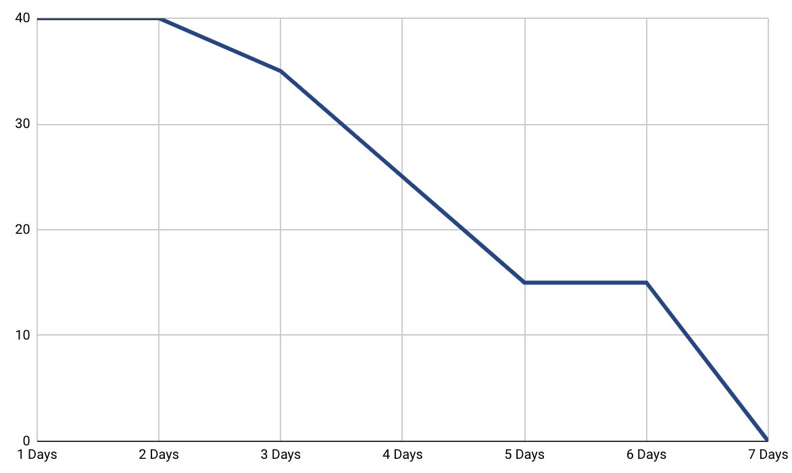

Isaac Blasco Mir
Ken Chanseau Saint-Germain
Thomas Digby
Niki Muller-Mezin
Puffy Light
RSVPeasy Project Status Report
November 2nd 2018
Sprint Completed StoriesSprint Burn Down Chart

Kicking off our project work, we first coordinated our team communication: We set up a Whatsapp group, a Trello board and a shared Google Drive. Currently we try to get a better picture of the project scope, we set up our work stations and get everything rolling. We set up a git repository and structure for the project and the report, creating repositories for all team members.
Product Backlog
We are currently working on detailing out and sizing the user stories in our product backlog.